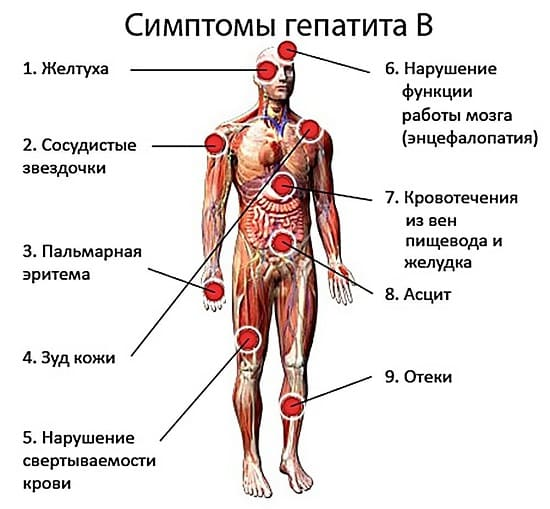
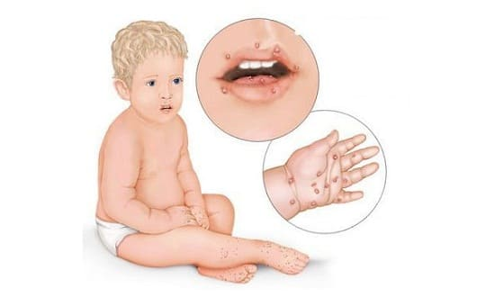
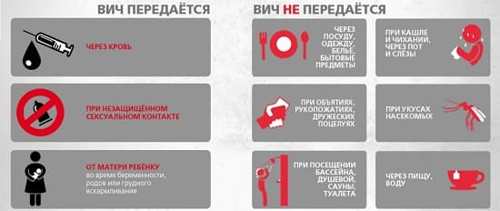
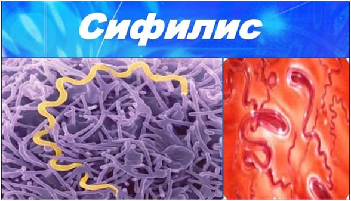
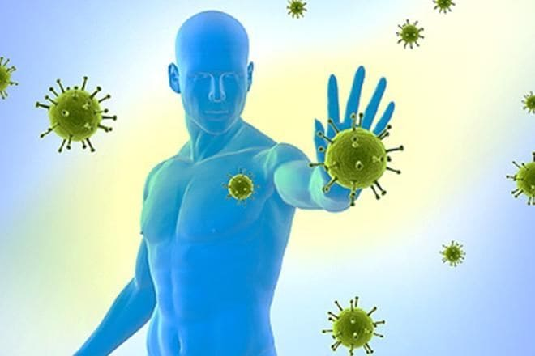

Заболевания, передающиеся половым путем (ЗППП), становятся все более и более распространенными среди подростков и молодых людей. Ниже дано краткое описание различных типов ЗППП, ситуаций, когда можно заподозрить, что ваш ребенок болен или заразился ими, возможные осложнения и лечение.
ХЛАМИДИОЗ
Хламидиоз — самое распространенное сегодня в США заболевание, передающееся половым путем. В этой стране примерно 1 миллион человек каждый год заражаются бактериями Chlamydia trachomatis, заболевая хламидиозом.
СИМПТОМЫ У ЖЕНЩИН
Примерно у 70% женщин, больных хламидиозом, симптомы могут вовсе отсутствовать! Вот почему все девушки, ведущие половую жизнь, должны быть обследованы на хламидии и другие ЗППП. Если у женщин все-таки есть симптомы, к ним относятся:
СИМПТОМЫ У МУЖЧИН
У инфицированных хламидией мужчин симптомы проявляются чаще, чем у женщин. Тем не менее почти у 25% зараженных мужчин они могут отсутствовать. Симптомы у мужчин включают:
СОВЕТ ДОКТОРОВ СИРС: ПОГОВОРИТЕ СО СВОИМ РЕБЕНКОМ В наши дни дети подвергаются все большему и большему влиянию сексуальных информационных ресурсов во все более раннем возрасте. Открыто и откровенно поговорите со своим ребенком о сексе и его возможных последствиях. Важно не показывать неодобрения при обсуждении этих вопросов. |
ДИАГНОСТИКА
Опять же все женщины, ведущие половую жизнь, должны быть обследованы на хламидии и другие ЗППП во время ежегодной сдачи цитологического мазка со слизистой шейки матки и, конечно, если у них появились симптомы. Врач может сделать анализы на хламидии, взяв образец выделений у мужчины или женщины. Иногда делают анализ мочи. Также важно обследовать всех половых партнеров.
ЛЕЧЕНИЕ
Поскольку это бактериальная инфекция, многие антибиотики успешно - лечат хламидиоз. Половые партнеры должны проходить лечение одновременно, чтобы избежать повторного заражения. После окончания лечения необходимо сделать контрольные анализы.
ПРОФИЛАКТИКА
Самое важное — безопасный секс. Самая эффективная форма профилактики — воздержание. Каждый раз необходимо пользоваться презервативами, а лучше — стабильные моногамные отношения. Наибольший риск заболеть хламидиозом — у людей, имеющих многочисленных половых партнеров и не практикующих безопасный секс.
Хламидиоз может также вызвать следующие осложнения у новорожденных от матерей, болевших во время родов: тяжелые глазные инфекции или хламидийную пневмонию, поскольку младенец контактирует с хламидиями, проходя через родовые пути. |
ОТДАЛЕННЫЕ ПОСЛЕДСТВИЯ
Возможные осложнения этого заболевания, особенно у женщин, включают:
ГОНОРЕЯ
Это заболевание, также известное как «триппер», является еще одной бактериальной инфекцией, передающейся половым путем. Она вызывается бактериями Neisseria gonorrhea и является в США вторым по распространенности заболеванием, передающимся половым путем, поражая примерно 700 000 человек ежегодно. Эти бактерии могут передаваться от человека к человеку при вагинальном, оральном или анальном сексе.
СИМПТОМЫ У ЖЕНЩИН
У женщин симптомы могут быть мало выраженными или вообще отсутствовать, но у некоторых они будут очень выраженными:
СИМПТОМЫ У МУЖЧИН
Так же, как и у женщин, симптомы могут варьировать от полного отсутствия до сильных проявлений:
Поговорите с врачом, если у вашего ребенка наблюдаются какие- либо из этих симптомов. Иногда это может быть сложно, поскольку подростки часто не хотят признаваться, что они занимаются сексом.
ДИАГНОСТИКА
На анализ берут любые выделения из пениса, влагалища, прямой кишки или горла. Также может быть сделан анализ мочи. Поскольку есть возможность одновременного заражения несколькими видами ЗППП, больных гонореей часто обследуют на наличие других ЗППП, включая хламидиоз и папилломавирус человека.
ЛЕЧЕНИЕ
Гонорея лечится так же, как и хламидиоз. Поскольку гонорея — это разновидность бактериальной инфекции, для лечения могут применяться определенные виды антибиотиков. Ваш врач выберет метод лечения в зависимости от тяжести заболевания. Необходимо обследовать всех половых партнеров, чтобы убедиться, что у них нет гонореи. Важно, как можно раньше начать лечение антибиотиками, чтобы понизить риск осложнений.
ПРОФИЛАКТИКА
Единственный абсолютный способ избежать заражения гонореей — воздержание. Важно объяснить, что существует возможность передачи гонореи через оральный контакт. Стабильные моногамные отношения значительно снижают риск заболевания. Очень важно использование презервативов.
ОТДАЛЕННЫЕ ПОСЛЕДСТВИЯ
Существует несколько возможных осложнений этого ЗППП. У женщин они схожи с осложнениями при хламидиозе . Если гонорею не лечить или лечить неправильно, она может привести к бесплодию и внематочной беременности из-за образования спаек в маточных трубах.
Другие возможные осложнения у женщин включают:
Возможные отдаленные последствия у мужчин:
Бактерии гонореи иногда могут инфицировать весь организм. Это явление известно, как бактериемия (наличие бактерий в крови). Это может быть опасно для жизни, и таких больных необходимо госпитализировать. Гонорея даже может поразить различные суставы, особенно коленные.
. Как и при хламидиозе, новорожденные могут заразиться гонореей при прохождении через родовой канал больной женщины. Осложнения могут включать тяжелую инфекцию глаз (гонорейный конъюнктивит), пневмонию и сепсис, заражение крови, которое может быть смертельным.
ГЕПАТИТ В
Вызывается вирусом, который поражает печень. Хотя большинство взрослых, заболевших гепатитом В, без как-либо особых проблем справляются с ним, у некоторых может развиться хроническое повреждение печени, печеночная недостаточность, и они становятся пожизненными носителями вируса гепатита В. Он передается половым путем, при совместном использование игл (внутривенное введение наркотиков), иногда при переливании крови, через иглы для тату или приспособления для прокалывания ушей. У младенцев, которые инфицированы гепатитом В от своих матерей во время родов, и у детей, которые подхватили гепатит В через случайный контакт с кровью, очень велика вероятность развития хронической печеночной недостаточности.
Гепатит В отличается от довольно безобидного гепатита А, который является заболеванием желудочно-кишечного тракта, передающимся фекально-оральным (через инфицированные продукты питания) путем. Существует также гепатит С.
СИМПТОМЫ
Некоторые люди, уже больные гепатитом, совсем не замечают никаких признаков. У других может быть огромное множество симптомов различной интенсивности:
ДИАГНОСТИКА
Гепатит В диагностируется с помощью анализа крови.
ЛЕЧЕНИЕ
Не существует лечения, которое поможет человеку справиться с начальной стадией этого заболевания печени. Медикаменты могут быть эффективными для предотвращения дальнейшего разрушения печени и могут полностью уничтожить вирус, когда человек выздоровел (если выздоровел) и стал хроническим носителем вируса.
ПРОФИЛАКТИКА
Безопасный секс (или воздержание) и отказ от использования одной и той же иглы для всей компании при внутривенном введении наркотиков (лучше не употреблять наркотики вовсе!) являются главными способами предотвращение контакта с вирусом. Крайне важно выявление вируса у гепатит В-позитивных беременных женщин, чтобы можно было начать надлежащее лечение новорожденным для предотвращения передачи инфекции. Если вашему взрослому ребенку никогда не делалась прививка от гепатита В, обсудите с врачом эту вакцинацию, состоящую из трех этапов, при вашем следующем визите.

ПРОСТОЙ ГЕРПЕС II ТИПА
Существуют несколько типов вируса герпеса, но единственным, относящимся к ЗППП, является простой герпес II типа, или генитальный герпес. Для получения информации об оральном простом герпесе I типа см. стр. 334.
СИМПТОМЫ
Когда человек впервые сталкивается с возбудителем генитального герпеса, болезнь обычно начинается с лихорадки, головной боли, усталости, мышечных болей, длящихся около недели. Через несколько дней появляются болезненные высыпания. У женщин они могут быть на наружной поверхности половых органов, включая малые половые губы, внутренней поверхности влагалища и часто на шейке матки. У мужчин они, как правило, появляются на головке или стволе пениса и иногда на мошонке, бедрах и ягодицах. Эти высыпания очень болезненны и часто кровоточат. Они держатся от нескольких дней до двух недель, постепенно покрываясь корочкой. У некоторых людей симптомы не проявляются.
К сожалению, подобно своему собрату — оральному герпесу, генитальный герпес время от времени повторяется, обычно чаще всего в первый год после заражения. У некоторых людей в этот период бывает десять или более обострений инфекции. Пациенты часто жалуются на болезненность, боль и чувство жжения в области половых органов за 1—2 дня до появления герпетического очага. Обострения также могут быть связаны с такими спусковыми механизмами, как болезнь, стресс или беспокойство и ослабленная иммунная система. У женщин риск обострения этой инфекции больше во время менструаций.
СОВЕТ ДОКТОРОВ СИРС: ГЕРПЕС У ДЕТЕЙ Каждый ребенок, которому поставлен диагноз генитального герпеса, должен быть осмотрен на наличие признаков сексуального насилия. |
ДИАГНОСТИКА
Генитальный герпес может быть диагностирован лабораторно. Часто берутся образцы с болезненных участков, из которых можно вырастить и идентифицировать вирус.
ЛЕЧЕНИЕ
Генитальный герпес не лечится. Разработаны противовирусные препараты, которые могут уменьшить тяжесть и продолжительность обострений. Приняты два метода лечения генитального герпеса. Один метод заключается в принятии противовирусных препаратов при первых признаках обострения герпеса, чтобы уменьшить тяжесть заболевания, а другой задействует ежедневную подавляющую терапию противовирусными препаратами. Преимуществом его является уменьшение количества обострений и снижение риска заражения партнеров. Обсудите это с вашим врачом для получения более подробной информации о лечении генитального герпеса.
ПРОФИЛАКТИКА
Необходимо полностью исключить половой контакт, если у одного из партнеров обострение. Родители, рассказывайте своим детям о том, что такое генитальный герпес и каковы его пожизненные последствия. Единственный способ наверняка избежать герпеса — воздержание от вагинального и орального секса. Было отмечено увеличение количества случаев заражения генитальным герпесом через оральный секс. Генитальный герпес может поразить ротовую полость так же, как он поражает гениталии, и он становится все более и более распространенным. Если ваш ребенок ведет половую жизнь, подчеркните важность безопасного секса и избегания рискованного полового поведения, например, наличия нескольких половых партнеров. Некоторые исследования показали, что большинство людей заражаются генитальным герпесом, когда у их партнеров не наблюдается никаких признаков заболевания.
ГЕРПЕС НОВОРОЖДЕННЫХ
Это редкое, но тяжелое и потенциально смертельное заболевание новорожденных вызвано простым герпесом II типа (генитальным герпесом), но небольшой процент случаев может быть вызван и простым герпесом I типа (оральным герпесом). Новорожденные, как правило, инфицируются во время прохождения по родовому каналу. Иногда плод может инфицироваться еще в матке. Если вы беременны или планируете беременность, очень важно сообщить своему врачу о наличии у вас или вашего партнера генитального герпеса или вероятного контакта с больным.
СИМПТОМЫ
Многие младенцы, зараженные вирусом герпеса, рождаются недоношенными и с маленьким весом. Начальные симптомы могут быть неспецифическими и включать раздражительность, апатичность, лихорадку и сниженный аппетит. Все младенцы с вышеописанными симптомами должны быть немедленно обследованы, и, скорее всего, они будут госпитализированы. В дальнейшем симптомы обычно усиливаются, и на коже, глазах, в полости рта появляются герпетические высыпания. С самого начала заболевания могут появиться судороги. Если неонатальный герпес не лечить, он может распространиться по всему телу и вызвать полиорганную недостаточность — нарушение работы многих или всех органов и систем организма.
ДИАГНОСТИКА И ЛЕЧЕНИЕ
Если у новорожденного появляются симптомы, указывающие на возможный неонатальный герпес, требуется немедленная госпитализация и полное обследование. Может быть
проведено выращивание культуры вируса из различных жидкостей организма. Также могут быть сделаны анализы на другие серьезные заболевания. Лечение обычно включает внутривенное введение противовирусных препаратов. Женщины, которые заражены герпесом, иногда проходят курс лечения пероральными противовирусными препаратами в последний триместр беременности.
ОСЛОЖНЕНИЯ
К осложнениям этого заболевания относятся:
• судороги;
Оба родителя должны пройти полное медицинское обследование на ЗППП во время своего первого предродового визита. Если есть какое-либо ЗППП, родителям будут даны советы по безопасному сексу и использованию презервативов во время беременности. Все женщины с активным герпесом должны рожать путем кесарева сечения. Это уменьшит риск заражения ребенка.

ВИЧ
Вирус иммунодефицита человека — очень серьезное и сложное заболевание. Вследствие того, что информация о лечении ВИЧ все время меняется, мы решили не включать описание ВИЧ в эту книгу. Профилактика такая же, как и для других ЗППП.
ВИРУС ПАПИЛЛОМЫ ЧЕЛОВЕКА
Вирус папилломы человека (ВПЧ) — это группа вирусов, которые могут инфицировать человека. Некоторые типы ВПЧ вызывают образование остроконечных кондилом, а другие могут вызвать рак шейки матки у женщин.
Остроконечные кондиломы передаются, когда инфицированный человек вступает в половой контакт с другим человеком. Они обычно видны на пенисе или наружных частях влагалища.
ФАКТОРЫ РИСКА
В группе риска находятся все, кто ведет половую жизнь, особенно мужчины и женщины, имевшие несколько половых партнеров. Известно, что, когда женщина инфицируется вирусом папилломы человека высокого риска во время полового контакта, вирус может проникнуть в клетки шейки матки. Примерно в 90% случаев природная защита организма «вычистит» инфекцию ВПЧ. В оставшихся 10% случаев ВПЧ может вызвать нарушения в клетках шейки матки. Со временем это может привести к раку шейки матки. Женщины часто заражаются ВПЧ от мужчин, которые являются бессимптомными носителями типа вируса высокого риска.
ДИАГНОСТИКА
После начала половой жизни очень важно ежегодно сдавать мазки, чтобы диагностировать ВПЧ. Наряду с традиционными мазками многие врачи сейчас делают анализы на типы ВПЧ высокого риска. Регулярно сдавать мазки важно для выявления нарушений до того, как они перерастут в рак. Фактически все видимые бородавки в области гениталий появляются в результате ВПЧ. Врач может сделать анализ бородавки, чтобы определить, вызвана ли она ВПЧ высокого риска.

Существенный прорыв — изобретение вакцины от ВПЧ. Она предназначена для девушек в возрасте от 2 до 26 лет и вводится за 3 приема. Есть надежда, что вакцинация всех молодых девушек от ВПЧ раньше, чем они встретятся с вирусом папилломы человека, значительно снизит количество аномальных мазков и, соответственно, случаев рака шейки матки. |
ЛЕЧЕНИЕ
Лечение зависит от того, где обнаружен ВПЧ.
Остроконечные кондиломы. Существует несколько методов лечения остроконечных кондилом: применение различных кислот или замораживание. Также используют прижигание электрическим током, лазерное и хирургическое иссечение. Повторное появление кондилом вокруг пролеченного участка — довольно распространенное явление.
ВПЧ шейки матки. Если у подростка или взрослого наряду с аномальным мазком обнаружена инфекция ВПЧ, возможно, потребуются дальнейшие анализы и лечение. Сюда входит биопсия шейки матки и возможное удаление аномальных клеток шейки матки.
ПРОФИЛАКТИКА
ВПЧ может быть предотвращена несколькими путями. Риск инфицирования можно снизить, используя презервативы и избегая рискованной сексуальной активности, например, раннего начала половой жизни и многочисленных половых партнеров.
СИФИЛИС
Это ЗППП встречается реже, чем вышеперечисленные, но число случаев заболевания сифилисом стабильно увеличивается. Сифилис вызывается бактериями, которые называются «бледные трепонемы». Возрастная группа с самым высоким риском заболевания — сексуально активные люди в возрасте от 20 до 29 лет. Тем не менее сифилис иногда встречается и у людей младшего возраста. Он распространяется через половой контакт. Будущая мать может инфицировать своего ребенка, если она больна сифилисом.
СИМПТОМЫ
Начальные симптомы сифилиса, как правило, проявляются лишь в виде одной или более безболезненных язвочек (называемых сифилитические шанкры) через несколько недель после заражения. Эти язвы обычно образуются в паховой области и/или внутри влагалища у женщин и, как правило, проходят в течение 6 недель. У больного обычно не бывает других симптомов. Если его не лечить, сифилис может развиваться на протяжении всей жизни. Читайте ниже об отдаленных последствиях.

ДИАГНОСТИКА
Существует несколько анализов крови, которые могут быть сделаны для выявления сифилиса.
ЛЕЧЕНИЕ
Сифилис легко лечится, если выявлен на ранней стадии. Поскольку его вызывают бактерии, применяются антибиотики. Пенициллин все еще остается самым эффективным лечением. Он вводится в инъекциях, и, как правило, требуется только один курс лечения.
ПРОФИЛАКТИКА
Безопасный секс, воздержание и использование презервативов со всеми партнерами могут значительно снизить риск заражения сифилисом.
ОТДАЛЕННЫЕ ПОСЛЕДСТВИЯ
Если не лечить сифилис на начальной стадии, заболевание может прогрессировать и пройти еще две стадии. Вторая и третья стадии сифилиса развиваются десятилетиями, и симптомы, включая проблемы с нервной системой, сердцем, кровеносными сосудами и костями, обычно проявляются в более взрослом возрасте. Поговорите со своим врачом, если вам нужна более подробная информация.

ВРОЖДЕННЫЙ СИФИЛИС
Это очень неблагоприятное состояние, которое развивается, когда беременная мать, больная сифилисом, передает его плоду через плаценту. Это угрожает жизни плода. Примерно в половине случаев плод, зараженный сифилисом внутриутробно, если не проводится лечение, умирает во время беременности или сразу после рождения. Матери, которые были инфицированы на ранних сроках беременности, зачастую сталкиваются с большими осложнениями у детей, чем заболевшие в более поздние сроки беременности. К счастью, эта болезнь сегодня встречается редко. Женщинам в США делают анализы на сифилис во время беременности.
СИМПТОМЫ
Симптомы у новорожденных:
Симптомы у младенцев и детей до 3 лет:
ДИАГНОСТИКА
Как было упомянуто выше, всем беременным женщинам в США делают анализы на сифилис во время беременности. Детям, у которых подозревают наличие сифилиса, проводят и другие анализы.
ЛЕЧЕНИЕ
Если сифилис диагностирован рано, существует очень эффективное лечение. Беременным женщинам, у которых установлено наличие сифилиса, делают инъекции пенициллина. Это также окажет лечебный эффект на плод и значительно снизит вероятность передачи сифилиса плоду через плаценту. Если сифилис рано обнаружить и сразу же начать лечение, у детей будет отличный долговременный прогноз. После рождения инфицированным детям также проводят лечение пенициллином, чтобы уничтожить возбудителя.
СОВЕТ ДОКТОРОВ СИРС: ЧИТАЙТЕ ОБ ЭТОМ БОЛЬШЕ Читайте больше о заболеваниях, передающихся половым путем, а затем открыто рассказывайте об этом своему ребенку. Эти заболевания могут привести к пожизненным медицинским проблемам и сожалениям. |
ОТДАЛЕННЫЕ ПОСЛЕДСТВИЯ
Если откладывать лечение или не провести его совсем, можно столкнуться с долговременными осложнениями. К ним относятся:
Здоровье ребенка от докторов Сирс / Сирс У. и др.